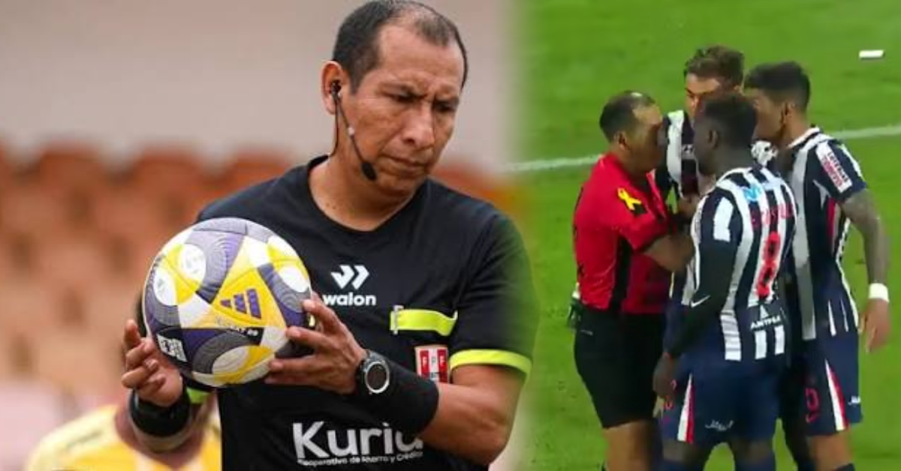

Polémica en el clásico: Alianza Lima cuestiona a Micke Palomino por sancionar falta sobre Diego Romero

El clásico del fútbol peruano dejó una vez más un capítulo cargado de tensión y controversia arbitral. En esta oportunidad, el club Alianza Lima ha manifestado su absoluto descontento con la actuación del juez principal Micke Palomino, quien protagonizó una decisión que desató los reclamos airados tanto en el banquillo blanquiazul como entre los asistentes al recinto deportivo.
Los hechos ocurrieron de manera muy temprana en el encuentro. Cuando apenas transcurrían cuatro minutos de la primera mitad, el partido se encontraba en una fase de estudio y alta intensidad, característica de este tipo de compromisos de máxima rivalidad. Sin embargo, una acción ofensiva que prometía generar peligro real sobre el arco rival quedó abruptamente invalidada por el silbato del árbitro.
Una controvertida decisión arbitral a los cuatro minutos de juego interrumpió una opción de gol para Alianza Lima tras un choque entre los propios futbolistas cremas.
La jugada en cuestión se originó a partir de una aproximación del cuadro victoriano. En su intento por despejar el balón y evitar el avance de los atacantes aliancistas, se produjo un choque accidental entre los propios futbolistas del equipo crema, generando confusión en el área defensiva. Lejos de dejar continuar las acciones bajo el principio de jugada llovida o disputa limpia, el árbitro Micke Palomino decidió pitar una falta favorable a la defensa.
La sanción frenó de manera inmediata lo que representaba una clara y manifiesta opción de gol para Alianza Lima. Los jugadores del cuadro blanquiazul rodearon de inmediato al juez central para exigir explicaciones sobre el criterio aplicado, argumentando que el contacto que interrumpió la jugada provino exclusivamente de un lance entre compañeros de equipo y no de una infracción cometida por la ofensiva visitante.
El impacto de la decisión en el desarrollo del encuentro
Decisiones de esta naturaleza, tomadas en los primeros compases de un partido de alta trascendencia, suelen condicionar el estado anímico tanto de los protagonistas en el campo como de las bancas técnicas. El cuerpo técnico de Alianza Lima expresó su malestar desde la zona técnica, considerando que la acción privó a su equipo de adelantarse en el marcador en un momento psicológicamente clave del cotejo.
El arbitraje en el fútbol peruano vuelve a quedar bajo la lupa tras este episodio. Las discusiones en torno a la interpretación de jugadas divididas y faltas inexistentes o mal sancionadas continúan generando debate en el ámbito deportivo nacional. Mientras los analistas arbitrales discuten la pertinencia de la intervención de Palomino, el club aliancista mantiene su postura crítica frente a un fallo que consideran determinante para las aspiraciones del equipo en el clásico.
El desarrollo posterior del encuentro estuvo marcado por la fricción propia de estas instancias, donde cada balón se disputa con máxima intensidad. No obstante, el recuerdo de la acción a los cuatro minutos de juego permanecerá como uno de los pasajes más comentados y discutidos de la jornada futbolística.